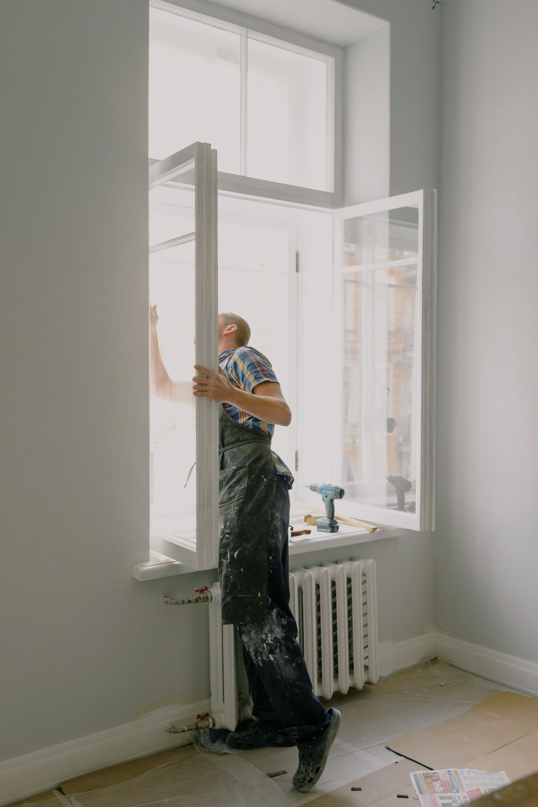

Пластиковые окна
Окна ПВХ для квартиры, офиса и загородного дома.
Выберите, что нужно, укажите примерные размеры — сайт покажет цену «от» с прайса и соберёт заявку на замер с адресом и удобным днём.

Фото — иллюстрация (Pexels), не объект «Окна 55»
Чтобы узнать цену и вызвать замер, нужно дозвониться: формы заявки на сайте нет, а с телефона он не читается.
Тип, размеры и цена «от» — сразу на экране; день замера выбирается в той же заявке.
Заявка с размерами, адресом замера и ближайшим офисом уходит менеджеру в Telegram; срочный ремонт ворот помечается.
✦Это концепт. С вашими фото и правками будет ещё лучше
Направления — из меню текущего сайта. Сроки изготовления и монтажа уточняются.
Окна ПВХ для квартиры, офиса и загородного дома.
Остекление и отделка — состав работ уточняется.
Секционные, откатные, распашные, рольворота, скоростные, огнестойкие.
Для секционных, откатных и распашных ворот и рольворот: блок управления, привод, пульт.
Замена роликов, тросов, подтяжка пружин; возможен срочный ремонт.
Герметизаторы проёма, уравнительные платформы, ножничные лифты, мобильные рампы, перегрузочные тамбуры.
Три цены, которые опубликованы на текущем сайте. Остальное — после замера; актуальность цен уточняется.
от 7 800 ₽
Цена «от» с главной страницы
от 21 854 ₽
Цена «от» с главной страницы
4 000 ₽
Замена всех роликов, тросов и подтяжка пружин, с комплектующими
Ориентир считается по ценам «от» с сайта. Точную стоимость назовёт замерщик.
Почта: okna55@mail.ru. Часы работы уточняются.